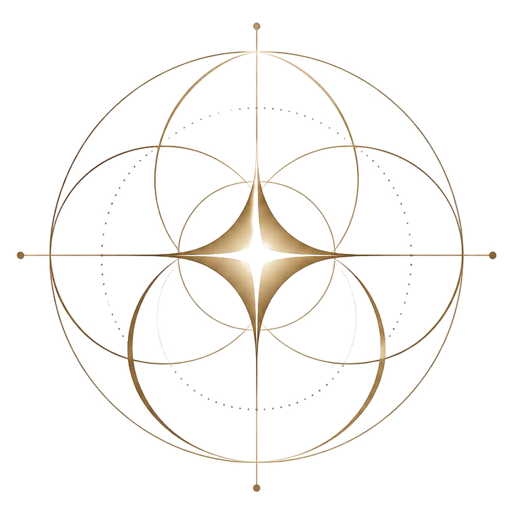
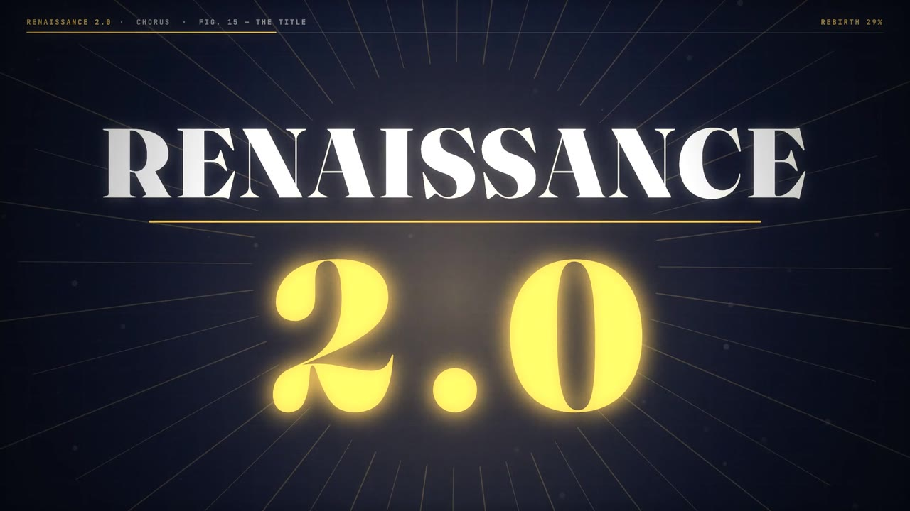
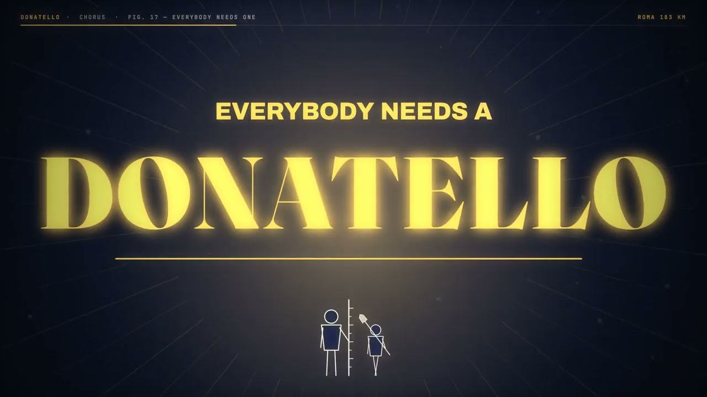

Sovereign models
We work on AI models trained in Europe, on European terms: our data, our languages, our infrastructure. Intelligence is becoming infrastructure, and a continent should not have to rent its thinking.

Renaissance LabsA European lab for a second renaissance. We train sovereign AI models, and we make the case that Europe can build again.
Premise
In 1420 a goldsmith with no training as an architect agreed to build a dome that the experts of Florence had called impossible. Nobody gave him permission to be that ambitious. He gave it to himself.
That is what a renaissance is: a way of standing in the world. Curious about everything, unafraid to start, willing to be a beginner again. The painters, engineers and printers of fifteenth-century Europe were not a different kind of person. They simply assumed that one life was big enough for art, science and craft at once.
You have the same permission, and better tools than any Medici could pay for. What is usually missing is not ability. It is the belief that you are allowed to try.
So try. Pick up the thing you were told you were not a person for. Make something nobody has asked for yet. Become the fullest version of yourself, and bring people with you. A continent changes the same way a person does.
Work
We work on AI models trained in Europe, on European terms: our data, our languages, our infrastructure. Intelligence is becoming infrastructure, and a continent should not have to rent its thinking.
Capability is not enough if people do not believe they are allowed to use it. So we also make things that change the mood: films, songs, essays and arguments for a Europe that builds.
Films

Four minutes on a dome, a printing press, a lens, a cookie banner and a kid in a workshop. Every frame is drawn by code.
Florence, fourteen-twenty.
They said the dome could not be built.
He built it anyway.
A goldsmith in Florence with nothing to show
Raised a dome with no scaffold, six centuries ago
A press in Mainz turned lead into light
And a man with a lens set the heavens right
Then we got careful, then we got slow
Roped off the marble and charged for the show
We built the web in a lab by a lake
Now “accept all cookies” is all that we make
But the marble’s still warm, and the lights are still on
There’s a kid in a workshop from midnight till dawn
Renaissance two-point-oh
Wake the old world, let it grow
From Lisbon to Tallinn, from Stockholm to Rome
We’re not here for the history, we’re building at home
Renaissance two-point-oh
Open the workshop, here we go
Bring the art and the science, the code and the stone
This time the dome is one we all own
Night train to Kraków, laptop on my knees
Twenty-four languages, all saying “please”
Leonardo wrote notebooks, backwards, by hand
I’ve got a repo and half of a plan
The Medici paid gold for a ceiling of sky
We’ve got a forty-page form, and we still apply
Six hundred years on a church in Cologne
We know how to finish what’s started in stone
And the marble’s still warm, and the kettle is on
There’s a lab full of strangers who won’t be for long
Not a postcard. Not a souvenir.
Not a statue of a golden year.
Every master started as the kid who swept the floor
Every dome was just a hole in the sky before
So hand me the chisel, hand me the keys
Rebirth is a verb. Say it with me:
Renaissance two-point-oh
Wake the old world, let it grow
From Lisbon to Tallinn, from Stockholm to Rome
We’re not here for the history, we’re building at home
Renaissance two-point-oh
Open the workshop, here we go
No prince and no pope with a name on the stone
This time the dome is one we all own
Europe, right now.
They say it can’t be built.
Hand me the bricks.

In 1401 Brunelleschi lost a competition. His fifteen-year-old friend said: let’s go to Rome. A film about the friend who believes in you first, and about being that friend for someone else.
Florence, fourteen-oh-one.
A goldsmith enters a competition.
He loses.
His friend is fifteen.
His friend says: let’s go to Rome.
They walked into Rome with a spade and a rule
And the locals decided: a couple of fools
Two boys in the rubble from dawn until dark
“Treasure hunters,” they called them, and missed the mark
They weren’t after gold, they were measuring stone
A temple, a column, a very large dome
They paid for their bread fixing rich people’s rings
And spent every evening on ruined old things
One had the plan and one carried the spade
And that’s more or less how the whole thing got made
Everybody needs a Donatello
Not the turtle, the other fellow
Someone who hears “I lost” and says “so?
Bring a shovel. We’re going to Rome.”
Everybody needs a Donatello
Tells you it’s bad. Comes back tomorrow.
Nobody ever built it alone
So go and be somebody’s Donatello
Back home, the kid carved a Christ out of wood
His friend took one look: “It’s a farmhand. It’s good,
but it’s a farmhand.” “Then make one,” he said
So he did, in secret, for months, it’s said
Asked him to lunch, sent him on with the food
The kid saw the cross and his apron came loose
Eggs on the floor, and the cheese, and the lot
“You carve the Christs. I’ll carve what I’ve got.”
Then twenty years on, with the dome halfway up
He sent bread and thin wine to the men at the top
One had the plan, a few hundred the hands
And that’s more or less where the whole thing stands
Everybody needs a Donatello
Not the turtle, the other fellow
Someone who hears “I lost” and says “so?
Bring a shovel. We’re going to Rome.”
Everybody needs a Donatello
Tells you it’s bad. Comes back tomorrow.
Nobody ever built it alone
So go and be somebody’s Donatello
They say one man painted that ceiling alone
He had a whole crew. It’s the myth that has grown.
Me, I’ve got headphones, a door I keep shut
A group chat on mute and a plan in a rut
Nine hundred contacts and no one to call
So I wrote to a stranger: “This might be small,
but I’m stuck on a thing. Do you want to see?”
And they wrote back: “Thursday. Bring it to me.”
Twelve painters in Florence, a club and a pot
Bring your own dish, and it better be hot
One built a church out of sausage and cheese
With a choir of roast thrushes, as real as you please
Pasta for hymn sheets, peppercorn notes
Nobody there was making history. They joked.
So here’s the whole secret, as I understand:
A renaissance is a dinner that got out of hand.
Everybody needs a Donatello
Not the turtle, the other fellow
Someone who hears “I lost” and says “so?
Bring a shovel. We’re going to Rome.”
Everybody needs a Donatello
Tells you it’s bad. Comes back tomorrow.
Nobody ever built it alone
Tonight I’ll be somebody’s Donatello
Europe, right now.
Somebody just lost.
Somebody else says:
“Let’s go to Rome.”
Precedents
A dome 45 metres wide, raised with no scaffold by a goldsmith.
Movable type. Lead turned into light.
A lens pointed at the sky, and the heavens set right.
The web, proposed in a lab by a lake and later given away.
Your turn.
Join
We are looking for people who would rather build than visit: researchers, engineers, artists and patrons, from Lisbon to Tallinn and from Stockholm to Rome.